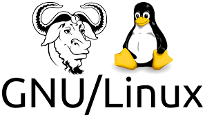

Antigamente não havia um controle de software no qual os programadores pudessem usufruir, sendo necessário que tivesse uma única pessoa com a versão original. Era preciso que a mesma pessoa compartilhasse uma parte do código no qual alguém iria modificar e assim quando o código estava acabado havia o retorno para que seja verificado os padrões para substituir a versão antiga.
Em 1972, após não gostar mais de como era feito, Marc Rochkind desenvolveu o primeiro controle de versão o Sistema de Controle de Código Fonte (SCCS), o mesmo era bem limitado, já que só poderia usar o arquivo uma pessoa por vez, porém ajudou muito pelo fato de não precisar utilizar mais espaço em disco.
Logo após, houve uma segunda geração de VCS no qual foi implementado ferramentas como CVS. Esta geração dava ao usuário muito mais versatilidade, porém ainda havia uma coisa a ser resolvida para que pudesse levar o VCS a uma nova etapa que era a mesclagem das informações. E por fim, foi criado a terceira geração que é os DVCS que visam melhorar a integridade de dados e a velocidade. Entre esta geração está o Git.


O Git é um DVCS criado por Linus Torvalds em 2005, quando teve sua primeira versão, e atualmente se tornou o mais utilizado. A maior diferença entre o Git e os outros é o fato de que as pessoas podem fazer tudo localmente o que significava, que no caso de emergência os dados de origem não seriam perdidos já que haveria uma cópia em seu local, que poderia ser enviado ao servidor. Além disso o Git utiliza múltiplos reservatórios e pode sincronizar mudanças entre eles e por fim concentrar em um repositório central. E finalizando, o mesmo dividi em várias seções de alterações os códigos, assim agilizando a forma dos outros verificarem o que você está fazendo.
No passado as empresas costumavam escolher um modelo mais proprietário para o desenvolvimento de software, onde somente a empresa poderia modificá-lo, e com isso, a corporação vendiam as licenças dos softwares para que se pudesse usá-lo.
Em torno de 1983, com a iniciativa de Richard Stallman houve um movimento sobre software livre, já que o mesmo não gostava do modelo proprietário de software, sendo assim ele acabou criando um projeto chamado GNU, além de fundar a Free Software Fundation (FSF).
Em 1991, Linus Torvalds seguindo os princípios do software livre cria o Kernel Linux que era conhecidamente a parte que faltava ao GNU para se tornar um sistema operacional completa fazendo assim a junção dos dois, denominado GNU/Linux porém atualmente chamado somente de Linux.
Este mesmo sistema é considerado o primeiro com software de código aberto e teve relevância pois mostrou a todos o potencial e o benefício de um sistema desenvolvido de forma colaborativa. E diante o tempo o GNU/Linux se tornou muito utilizado, sendo cerca de 70% utilizado em sistemas nos servidores web. O modo de poder fazer contribuições por análises e edições no código faz com que desenvolvedores do mundo todo observem o potencial de poder desenvolver softwares de forma colaborativa, se tornando mais confiável.